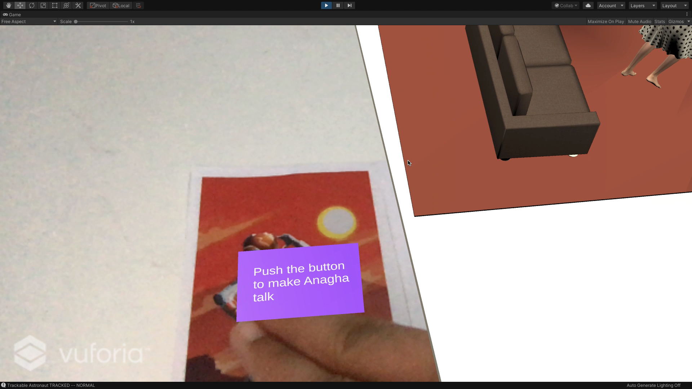
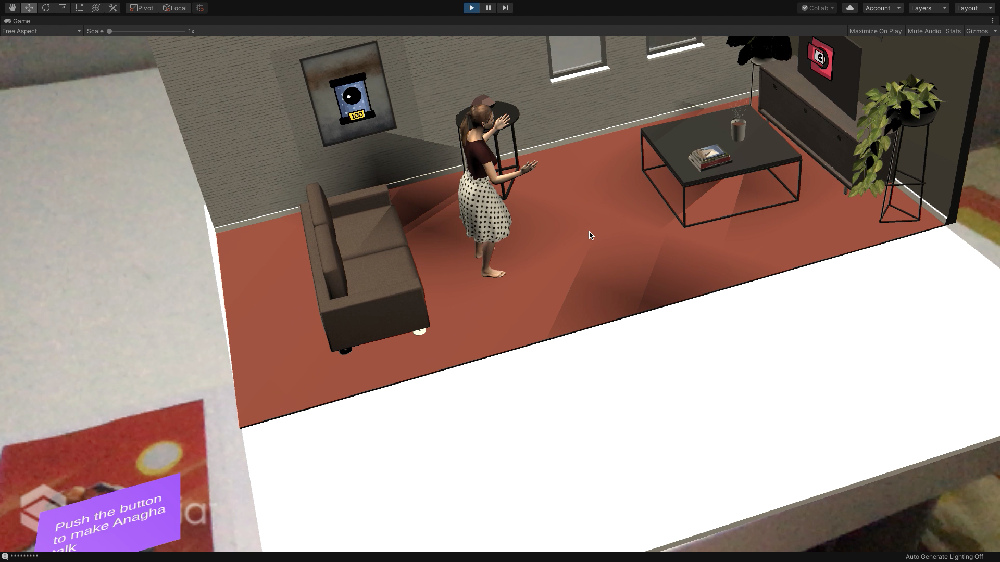
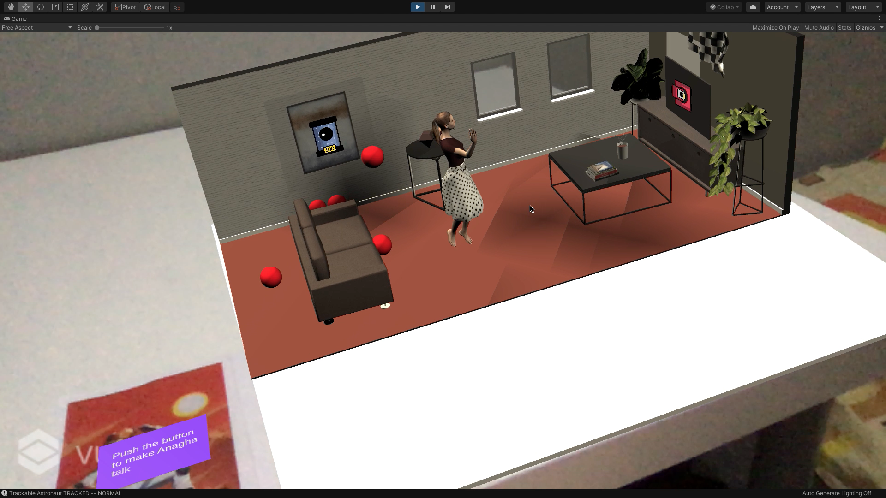
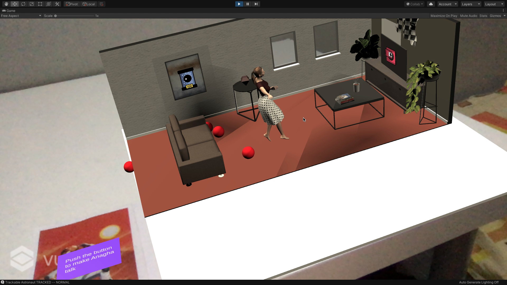
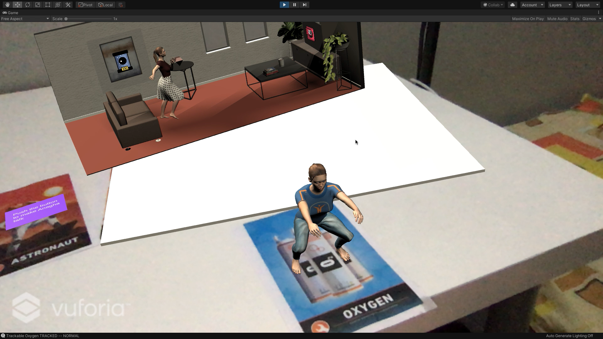
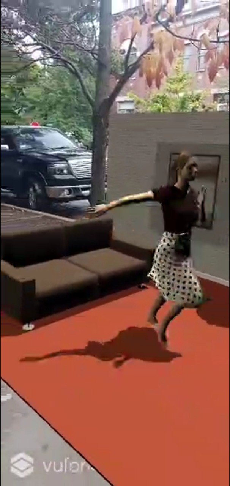
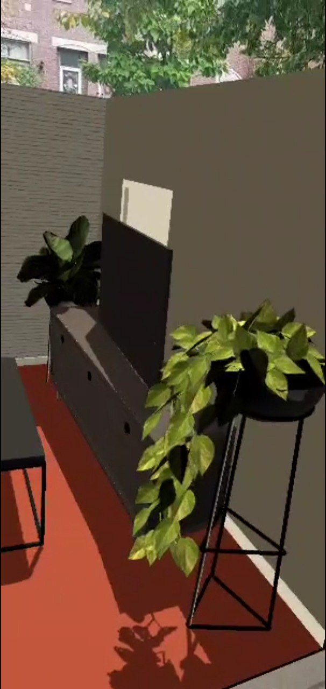

In this project we are exploring a bit and envisioning on how our future would look like with AR glasses and how that can be used to interact with AR playsets, doll sets, both small and lifesize.
Playing with different playsets, like kitchen sets, doll houses, garage sets have been a part of every child. As kids, we all played excitedly with our house sets for one day, two days? and then it lay around somewhere in the corner. But with AR, kids can never get bored and don't have to deal with just one set of playset. You can keep switching around, try new ones as long as you wish!
In this project I have created a similar living room playset. It has a mini me in the living room salsa dancing. (As a kid, I would have loved to play with a mini me. How fascinating is it to see your own mini version? Everyone can be a barbie now!) There are many things present in the living room which you usually find in living rooms - TV, TV set, Couch, coffee table, coffee, books on the couch and more! There are several animated objects as well. On pressing the button, the avatar introduces you to the house and goes back to dancing! (She sure loves dancing!) At any point in the tablesize playset, you can click using the mouse and a number of balls fall, bouncing around the set demonstrating the physics built into the set. Adding physics definitely makes it more immersive.
And finally, you can size it up to lifesize and play with a lifesize version of you! (Seeing a twin-you wish just got real!)
Screenshot showing the playset.
Pressing on the button to make the Avatar speak
On the button press, the animation changes from dancing to talking. And the avatar introduces user to the house.
On mouse click, the balls fall from the sky bouncing off the couch, table, avatar and all the objects in the scene.
Balls falling off the table.
The same avatar in different clothing and animation.
 The app running in lifesize on a mobile application
Augmented Reality can completely change the world how we see it. The opportunities are ample and can be used in almost everything. We can just point our mobile phone (or just look at it with AR glasses) at anything we wish and see all the information we require.
Playing with different playsets, like kitchen sets, doll houses, garage sets have been a part of every child. As kids, we all played excitedly with our house sets for one day, two days? and then it lay around somewhere in the corner. But with AR, kids can never get bored and don't have to deal with just one set of playset. You can keep changing your playsets, switching around, try new ones as long as you wish! Do you want to be in Marvel Cinematic Universe, be so, or are you a DC fan, and want to be with Batman? do you want to be with Elsa in Frozen? Please yourself!. Every possibilty is possible, since it doesn't have to be limited by actual physical product's manufacturing. AR playsets are also way more portable than the traditional physical ones.Though Traditional playsets though are more tangible, AR playsets will immerse them into the scene. With the sound affects, it sure puts them into the scene. Kids are very imaginative and they would love an extra dimension (sound) that makes it more immersive.
It can be quite creepy or extremely interesting or both to play with a figure that looks like them. People would love to create their ideal selfs, play with their ideal selfs, act as god (when interacting with smaller version of them) for their own lives in the playset. There are very popular and best selling games like The SIMS where MANY people do create sims that looks like them, because it's fun. It makes it more relatable. There definitely is demand for such a product. Having it in AR will definitely make it more immersive and wanted. It can also fulfill children's fantasy of having a twin sibling if they didn't. Having a lifesize figure of them might make them experience that which they wouldn't have been able to otherwise.
And while having your own version can be very tempting and exciting, it doesn't have to be limited to that. So this product can be used by people who would find this creepy or someone who won't. If people do find it weird, they can change the avatar to anything they want. Real, fictional or imaginary. You can have your entire family in the set, be on a your vacation with your family or your favorite superhero on a beach. It can be as realistic as you want or as absurd and imaginary if you like. There are no limitations to your imagination which translates to the AR playsets. Physical sets often have that limitation since they are tangible.
But like anything else, this needs to be well moderated as well before it ships. There are many cases in Youtube Kids where the videos while have cartoons, are violent or makes them say stuff that's not appropriate for kids. Heavy quality control will be needed as kids would directly interact with these. But In conclusion, I think AR playsets have a lot of potential and can see kids playing with them in the future.